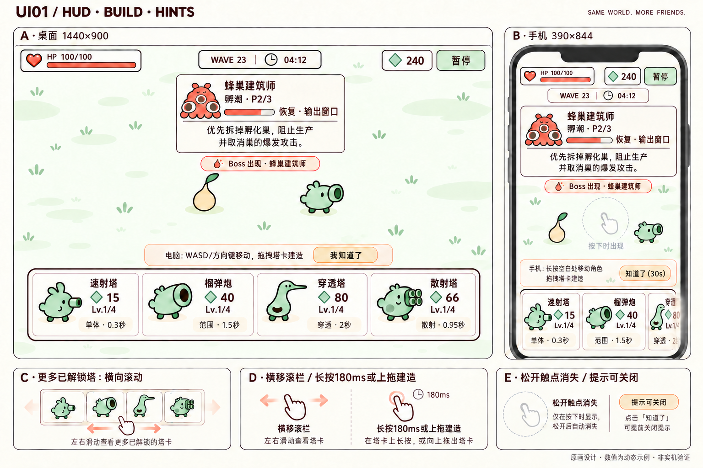
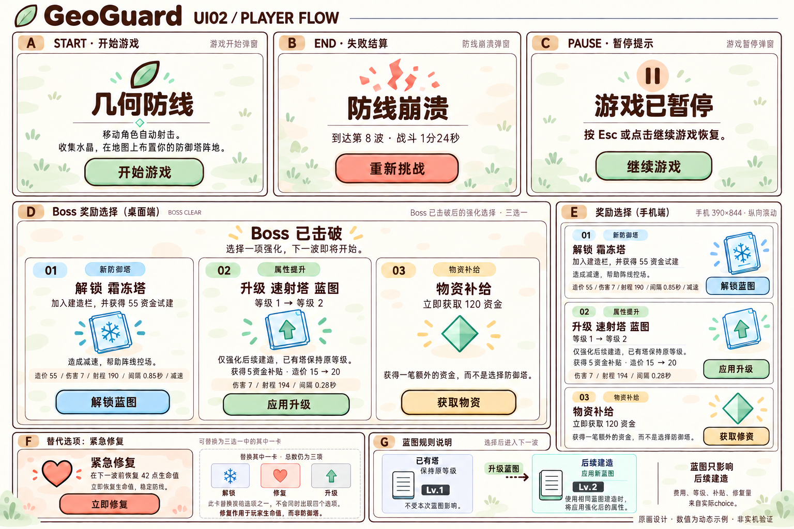
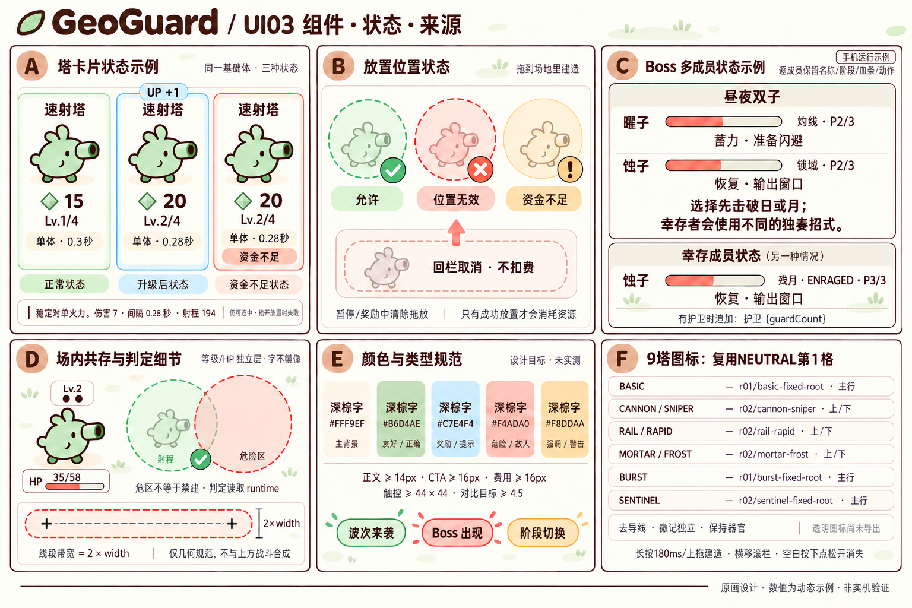

GeoGuard · UI r01
Submitted · 待主审逐图审批。三张精细原画，未接入游戏；1440×900／390×844为逻辑设计目标，数值为动态示例。
母稿为主审已批 master r02。资金菱形沿用薄荷绿身份，浅底正文/按钮采用深棕字。UI01地面仅为上下文；后续背景按已批BG01/BG02。身体图标逐源复用NEUTRAL，不把生成卡片缩略图变成新的身体权威。
UI01 · HUD、建造栏、提示

A桌面，B手机；C更多已解锁塔横滚，D塔卡长按/上拖与横移区分，E临时触点释放消失及可关闭提示。手机保留两完整可读卡和下一卡露边。
UI02 · 开始、结束、暂停、奖励与蓝图

A开始，B结束，C暂停；D/E为同组实际三选项的桌面/手机卡体；手机共享D的Boss已击破标题与副标题。F修复替换一卡，G已有塔不变/后续建造应用新蓝图。卡面CTA为整卡选择提示，不增加二次确认。
UI03 · 组件、状态、多成员与9塔来源

A代表卡/费用/等级/不足/hover，B可放/无效/不足/回栏取消，C双子逐行与另时刻幸存者、条件护卫字段，D受伤HP/等级独立及真实几何，E色字触控目标，F9塔NEUTRAL第1格复用。线段带仅几何说明；不是HIVE场景新增危区。
交付界限
原画内教学手指/箭头、来源账本、字段占位与色标都是设计注释，不能添加为玩家按钮。低资金仍可起拖，释放判定失败；修复作用于玩家HP；蓝图只强化后续建造。无debug升级/降级、收费升级、商城、声音入口、常驻摇杆或第四奖励。
未导出透明图标/分层源稿/动画/图集，未量测挂点，未做设备字号、触控、最终合成对比或性能验收。审批权在主审；最终桌面/手机/复杂战斗复合仍独立复审。
完整prompt采用内置image_gen；输入与最终图片实际view_image查看。历史候选仅保留为生成审计，不属于最终三张来源。